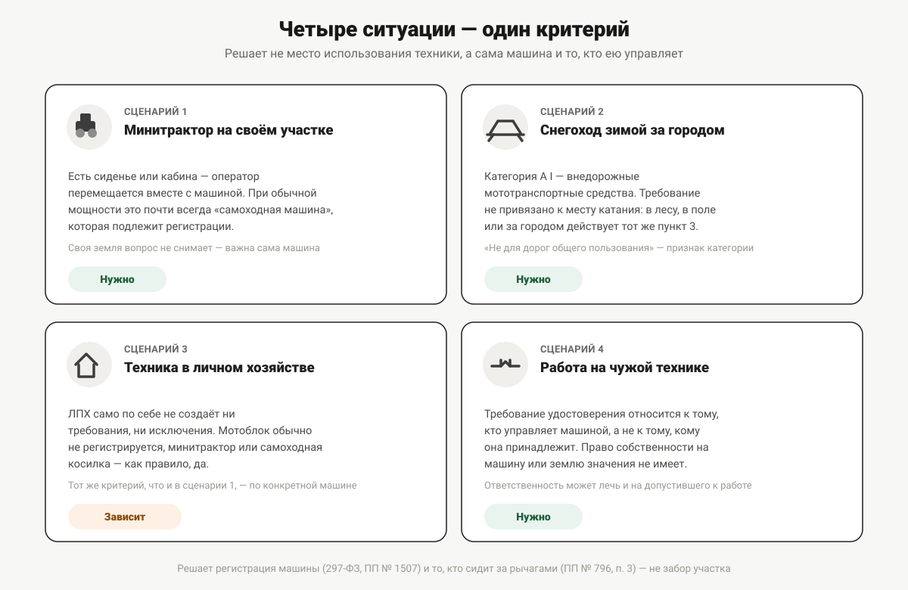
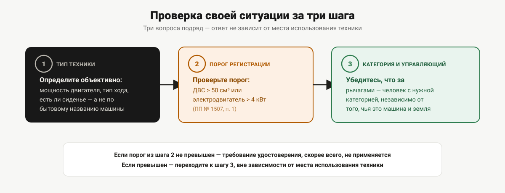

Кому в Пермском крае нужны права тракториста
Четыре типичные ситуации жителя Пермского края — от минитрактора на участке до работы по подряду. Разбираем, в какой из них удостоверение обязательно, а в какой нет.
Два соседа по СНТ купили похожую технику: у одного — минитрактор для своего участка, у другого — плотный мотоблок для тех же грядок. Оба уверены, что раз техника не выезжает за забор, документ на неё не нужен. Один прав, второй — нет, и разница между ними не в заборе, а в том, что написано в паспорте машины. Разбираем на четырёх типичных для края ситуациях, где норма отвечает однозначно, а где — нет.
Сценарий 1. Минитрактор на своём участке
Минитрактор — техника с сиденьем или кабиной, где оператор перемещается вместе с машиной, а не идёт рядом с ней пешком. Такая конструкция, при обычной для минитракторов мощности двигателя, почти всегда подпадает под определение «самоходная машина» из Федерального закона от 02.07.2021 № 297-ФЗ и подлежит государственной регистрации в органах гостехнадзора. А раз машина регистрируется — на управление ею нужно удостоверение тракториста-машиниста, и это требование пункта 3 Правил допуска к управлению самоходными машинами (постановление Правительства РФ от 12.07.1999 № 796) не содержит оговорки «кроме случаев, когда машина не покидает собственный участок». Владение землёй, на которой работает минитрактор, вопроса о правах не снимает: регистрация машины и управление ею — про технику и про человека за рычагами, а не про то, чья это земля.
Ответ: нужно, если машина по мощности и конструкции подпадает под регистрацию — а для минитрактора это почти всегда так. Как именно определить категорию под конкретную машину — в статье «Как определить категорию под свою технику», а разбор именно этой развилки — «минитрактор или мотоблок» — в статье «Мотоблок и минитрактор: когда права всё-таки нужны».
Сценарий 2. Снегоход зимой за городом
Снегоход относится к категории A I — «внедорожные мототранспортные средства», не предназначенные для движения по дорогам общего пользования. Требование удостоверения на управление такой техникой не привязано к тому, где именно катаются: в лесу, в поле или на выезде за город — везде действует тот же пункт 3 Правил допуска, запрещающий управление без документа при себе. То, что снегоход по определению не для дорог общего пользования, — это признак самой категории A I, а не условие, при котором права вдруг становятся не нужны.
Отдельный правовой слой, который эта статья сознательно не разбирает, — региональные ограничения на использование снегоходов и другой техники в конкретных местах (особо охраняемые природные территории, охотничьи угодья и подобное). Подтверждённых источников по таким ограничениям именно для Пермского края в проекте нет, и приводить их по памяти означало бы выдавать предположение за факт.
Ответ: нужно, независимо от того, используется снегоход только за городом или где-либо ещё. Подробный разбор категории A I и того, чем она отличается от автомобильной категории A, — в статье «Права на квадроцикл и снегоход».
Сценарий 3. Техника в личном подсобном хозяйстве
Здесь однозначного общего ответа нет — личное подсобное хозяйство само по себе не создаёт ни требования, ни исключения из него: статус земли и статус машины — это два разных вопроса, и норма о допуске к управлению самоходными машинами вообще не оперирует понятием ЛПХ. Отвечает на вопрос та же развилка, что и в первом сценарии, — подлежит ли конкретная машина государственной регистрации.
На практике в личном подсобном хозяйстве встречается и то, и другое: мотоблок, который обычно не регистрируется и прав не требует (потому что оператор идёт рядом с ним, а не сидит на нём), и более тяжёлая техника — минитрактор, культиватор с сиденьем, самоходная косилка — которая, скорее всего, регистрируется и требует удостоверения. Один и тот же участок ЛПХ может законно содержать оба случая одновременно, и ответ зависит от конкретной единицы техники, а не от хозяйства в целом.
Ответ: зависит от конкретной машины — критерий тот же, что в сценарии 1, и подробно разобран в статье «Мотоблок и минитрактор: когда права всё-таки нужны».
Сценарий 4. Работа на чужой технике по договору
Здесь меняется сама постановка вопроса: речь не о собственной машине на своей земле, а о работе на чужой технике — например, подряд на вспашку соседнего участка на чужом тракторе или временная работа механизатором в хозяйстве. Требование удостоверения по пункту 3 Правил допуска относится к тому, кто управляет самоходной машиной, а не к тому, кому она принадлежит. Право собственности на машину или на землю, где выполняется работа, значения не имеет: значение имеет то, кто сидит за рычагами.
Это тот случай, где ответственность может лечь на две стороны сразу: на самого работника — за управление без документа, и на того, кто допустил его к работе без проверки документов, — если оформлены трудовые или гражданско-правовые отношения. Статья 9.3 КоАП РФ предусматривает разные размеры штрафа для граждан и для должностных лиц, и это не случайность: подробный разбор ответственности и того, что грозит за управление без прав, — в статье «Ответственность за управление без прав». Какая техника и какие категории чаще всего требуются по подряду и по найму в разных отраслях края — в статье «Кому в Пермском крае нужен тракторист с удостоверением».
Ответ: нужно, если техника подлежит регистрации, — вне зависимости от того, чья это машина и чья земля.

Что общего у всех четырёх: один критерий, а не забор
Из четырёх сценариев видно общее правило: решает не то, где стоит машина и кому принадлежит земля, а два факта о самой технике — подлежит ли она государственной регистрации (порог по Правилам государственной регистрации самоходных машин, постановление Правительства РФ от 21.09.2020 № 1507 — двигатель внутреннего сгорания объёмом свыше 50 куб. см или электродвигатель мощностью более 4 кВт) и кто именно ею управляет. Если машина регистрируется — требование удостоверения действует независимо от того, покидает ли техника собственный участок.
Отдельно стоит выезд на дороги общего пользования — это не условие для самого требования об удостоверении, а дополнительный правовой слой: при выезде на дорогу общего пользования к требованиям Правил допуска добавляются требования законодательства о безопасности дорожного движения, которые не связаны с ним напрямую и не разбираются в этой статье. Иными словами, забор участка снимает вопрос о ПДД, но не снимает вопрос об удостоверении, если сама машина подлежит регистрации.
Где норма не даёт прямого ответа
Честно: не по каждой пограничной ситуации есть однозначный ответ.
- Модификации техники на стыке двух типов (например, мотоблок с дополнительным сиденьем) — норма не описывает такие случаи прямо, и ответ зависит от конкретной машины, а не от общего правила.
- Практика контроля использования техники строго в границах закрытого частного участка, без выезда за его пределы, — вопрос не столько права, сколько правоприменения: требование формально действует независимо от места использования, но у этой статьи нет подтверждённых данных о том, как часто и каким образом это проверяется на практике именно в Пермском крае.
- Региональные ограничения на использование техники в отдельных категориях мест (охотничьи угодья, особо охраняемые территории) — отдельный правовой слой, не подтверждённый источниками проекта применительно к Пермскому краю, и потому не раскрытый в этой статье.
Как проверить свою ситуацию за три шага
- Определите тип техники объективно — по мощности двигателя, типу хода и конструктивным признакам (есть ли сиденье, для кого предназначена машина), а не по бытовому названию. Алгоритм — в статье «Как определить категорию под свою технику».
- Проверьте порог регистрации — превышает ли двигатель 50 куб. см (для ДВС) или 4 кВт (для электродвигателя). Если нет — требование удостоверения, скорее всего, не применяется; если да — переходите к следующему шагу.
- Определите категорию и убедитесь, что за рычагами будет человек с нужным документом — независимо от того, кому принадлежит машина и земля, на которой она работает.

Куда обращаться, если ответ оказался «нужно»
Если по итогам проверки выходит, что удостоверение нужно, а его пока нет, — дальше вопрос переходит в практическую плоскость: с чего начать оформление и куда в Пермском крае обращаться. Экзамены принимает и удостоверения выдаёт региональная инспекция гостехнадзора — что входит в её полномочия и как устроено обращение, разобрано в статье «Куда в Перми обращаться за удостоверением тракториста». Тракторное направление «Авто-Класса» заявляет часть категорий из этого разбора — подробнее на странице направления.